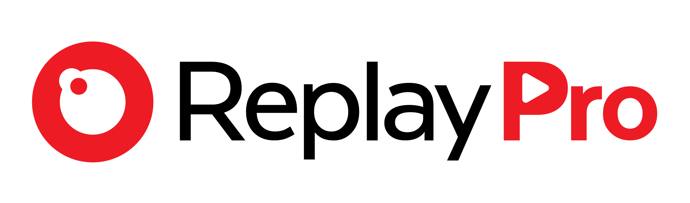

Câmera
Painel da câmera: gravação, replays e ao vivo. Conecte o celular ao Wi-Fi da ReplayPro.
Abrir painel
Câmera na rede da quadra?
Digite o endereço que aparece no painel em Opções → Estatísticas → Rede. Vazio = Wi-Fi da câmera.
Salvar
Replays na nuvem
Seus replays salvos na nuvem ReplayPro. Precisa de internet.
Ver replays